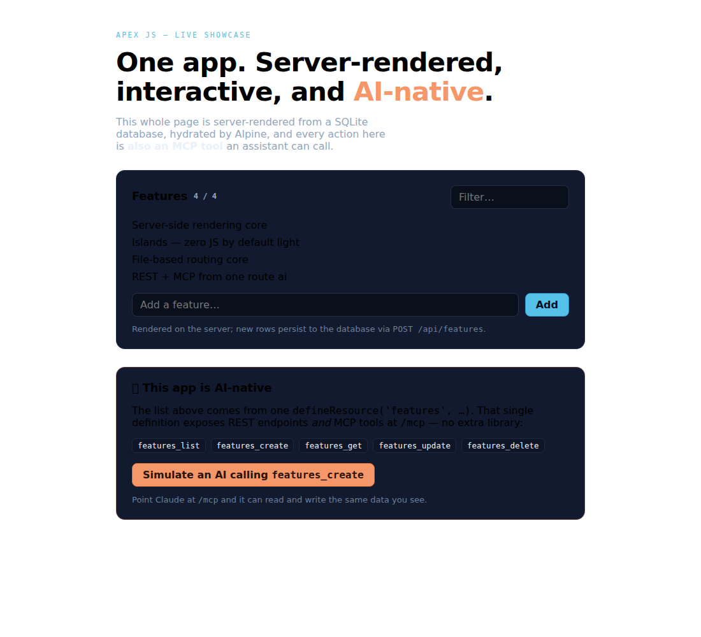

Apex is to Alpine what Nuxt is to Vue — file routing, server rendering, and islands.
Then it does what no other framework does: every typed API route is
also an MCP tool your AI can call. No extra library.
One app: server-rendered from the DB, interactive, and AI-native.
A single Apex app — a feature list rendered on the server from SQLite, filtered and added to
live in the browser, and an AI-native panel where clicking "Simulate an AI" hits the
same endpoint an assistant calls over MCP. Recorded from a running dev server.
Server-rendered
From the database
The loader() queries SQLite on the server; the list is real HTML on first paint.
Interactive
Islands + hydration
Alpine hydrates the panel — filter and add features live, no full-page reloads.
AI-native
Same data, one definition
The UI and an AI both call features_create — REST and MCP from one defineResource.
server/api/features.ts — the whole backend of the demo
// One definition → REST endpoints AND MCP tools// (features_list / get / create / update / delete). The UI// below and an AI assistant call the SAME handlers.export default defineResource('features', {
db,
table: schema.features,
insert: { name: z.string(), tag: z.string().optional() },
})
pages/index.alpine — the list is rendered from the DB on the server
<scriptserverlang="ts">
import { db, schema } from'../db/index.js'export async function loader() {
const features = await db.select().from(schema.features)
return { features } // → Alpine x-data, in the first HTML
}
</script>
The browser's "Add" and the "Simulate an AI" button both POST /api/features — the
exact endpoint exposed as the MCP tool features_create. One
defineResource, and the UI and an assistant operate on the same rows.
See the Data guide →

One app, three capabilities at once — from playground/showcase.
Three pillars
Light where it counts. Full-stack where you need it. AI-native by default.
Light
Ship almost no JavaScript
Static-first pages. Islands hydrate only when they need to — many pages ship zero framework JS until you scroll.
<!-- wakes on scroll, not on load -->
<sectionx-data="{ n: 0 }"client:visible>
<button@click="n++"x-text="n"></button>
</section>
Full-stack
Routing, SSR, typed routes
File-based routing, server-side rendering, and a component you already know how to write. On Node — no PHP required.
Because every route carries a strict, typed schema, exposing it to an AI is automatic.
The framework carries the MCP transport — you install nothing extra.
# create a new app and start the dev server
npm create apexjs@latest my-app
cd my-app
npm install
npm run dev # http://localhost:3000
npm run dev:islands # static-first islands mode
The scaffold ships a server-rendered page (pages/index.alpine) and an API
route that is also an MCP tool (server/api/hello.ts).
Apex JS is on npm under @apex-stack/*. SSR + hydration, islands, file routing,
components, AI-native APIs, a multi-database data layer, and a full production build (static
or Node server) are all proven and covered by tests. Jobs/queues and Nitro deploy presets
are next — see the roadmap.